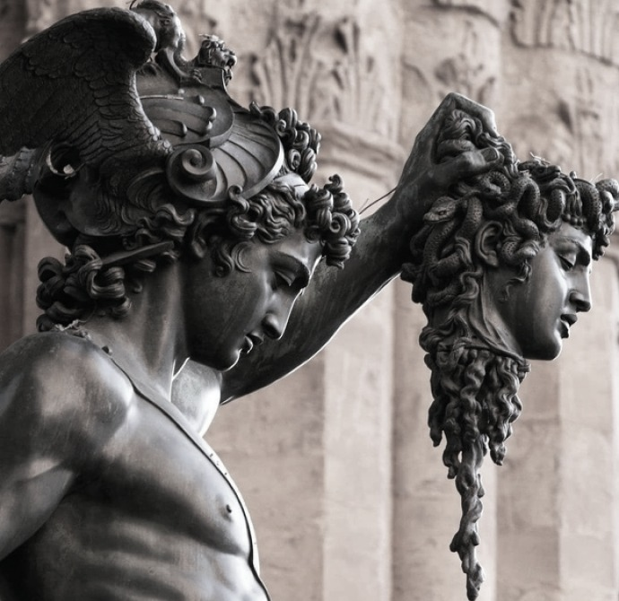

Персей, герой древнегреческой мифологии, убил Медузу Горгону, чудовище, чей взгляд превращал людей в камень. Этот подвиг был совершен по просьбе царя Полидекта, желавшего избавиться от Персея. Персей, используя голову Медузы как оружие, смог победить и других чудовищ, например, морское чудовище Кето.
Персей убивает горгону Медузу.
Полидект замыслил насильно взять себе в жены прекрасную Данаю, но Даная ненавидела сурового царя Полидекта. Персей заступился за свою мать. Разгневался Полидект и с этого времени он думал только об одном - как погубить ему Персея. В конце концов жестокий Полидект решил послать Персея за головой горгоны Медузы. Он призвал Персея и сказал ему:
- Если ты действительно сын громовержца Зевса, то не откажешься совершить великий подвиг. Сердце твое не дрогнет ни перед какой опасностью. Докажи же мне, что Зевс - твой отец, и принеси мне голову горгоны Медузы. О, верю я, Зевс поможет своему сыну!
Гордо взглянул Персей на Полидекта и спокойно ответил:
- Хорошо, я добуду тебе голову Медузы.
Отправился Персей в далекий путь. Ему нужна было достигнуть западного края земли, той страны, где царили богиня Ночь и бог смерти Танат. В этой стране жили и ужасные горгоны. Все тело их покрывала блестящая и крепкая, как сталь, чешуя. Ни один меч не мог разрубить эту чешую, только изогнутый меч Гермеса. Громадные медные руки с острыми стальными когтями были у горгон. На головах у них вместо волос двигались, шипя, ядовитые змеи. Лица горгон, с их острыми, как кинжалы, клыками, с губами, красными, как кровь, и с горящими яростью глазами были исполнены такой злобы, были так ужасны, что в камень обращался всякий от одного взгляда на горгон. На крыльях с золотыми сверкающими перьями горгоны быстро носились по воздуху. Горе человеку, которого они встречали! Горгоны разрывали его на части своими медными руками и пили его горячую кровь.
Тяжелый, нечеловеческий подвиг предстояло совершить Персею. Но боги Олимпа не могли дать погибнуть ему, сыну Зевса. На помощь ему явился быстрый, как мысль, посланник богов Гермес и любимая дочь Зевса, воительница Афина. Афина дала Персею медный щит, такой блестящий, что в нем, как в зеркале, отражалось все; Гермес же дал Персею свой острый меч, который рубил, как мягкий воск, самую твердую сталь. Вестник богов указал юному герою как найти горгон.
Долог был путь Персея. Много стран прошел он, много видел народов. Наконец достиг он мрачной страны, где жили старые грайи. Один только глаз и один зуб имели они на всех трех. По очереди пользовались они ими. Пока глаз был у одной из грай, две другие были слепы, и зрячая грайя вела слепых, беспомощных сестер. Когда же, вынув глаз, грайя передавала его следующей по очереди, все три сестры были слепы. Эти-то грайи охраняли путь к горгонам, только они одни знали его. Тихо подкрался к ним во тьме Персей, и по совету Гермеса, вырвал у одной из грай чудесный глаз как раз в тот миг, когда она передавала его своей сестре. Вскрикнули грайи от ужаса. Теперь они все трое были слепы. Что делать им слепым и беспомощным? Стали они молить Персея, заклиная его всеми богами, отдать им глаз. Они готовы были сделать все для героя, лишь бы он вернул им их сокровище. Тогда Персей потребовал у них за возвращение глаза указать ему путь к горгонам. Долго колебались грайи, но пришлось им, чтобы вернуть себе зрение, указать этот путь. Так узнал Персей, как попасть ему на остров горгон, и быстро отправился дальше.
Во время дальнейшего пути пришел Персей к нимфам. От них получил он три подарка: шлем властителя подземного царства Аида, который делал невидимым всякого, кто его надевал, сандалии с крыльями, с помощью которых можно было быстро носиться по воздуху, и волшебную сумку: эта сумка то расширялась, то сжималась, смотря по величине того, что в ней лежало. Надел Персей крылатые сандалии, шлем Аида, перекинул через плечо чудесную сумку и быстро понесся по воздуху к острову горгон.
Высоко в небе несся Персей. Под ним расстилалась земля с зелеными долинами, по которым серебряными лентами вились реки. Города виднелись внизу, в них ярко сверкали белым мрамором храмы богов. Вдали высились горы, покрытые зеленью лесов, и, как алмазы, горели в лучах солнца их вершины, покрытые снегом. Вихрем несется Персей все дальше и дальше. Он летит так высоко, как не взлетают и орлы на своих могучих крыльях. Вот блеснуло вдали, как расплавленное золото, море. Теперь над морем летит Персей, и шум морских волн едва уловимым шорохом доносится до него. Вот уже не видно земли. Во все стороны, куда только хватает взора Персея, раскинулась под ним равнина вод. Наконец в голубой дали моря черной полоской показался остров. Все ближе он. Это остров горгон. Что-то нестерпимым блеском сверкает в лучах солнца на этом острове. Ниже спустился Персей. Как орел, парит он над островом и видит: на скале спят три ужасные горгоны. Они раскинули во сне свои медные руки, огнем горят на солнце их стальная чешуя и золотые крылья. Змеи на их головах чуть шевелятся во сне, Скорей отвернулся Персей от горгон. Боится увидеть он их грозные лица - ведь один взгляд, и в камень обратится он. Взял Персей щит Афины-Паллады - как в зеркале отразились в нем горгоны. Которая же из них Медуза? Как две капли воды похожи друг на друга горгоны. Из трех горгон лишь Медуза смертна, только ее можно убить. Задумался Персей. Тут помог Персею быстрый Гермес. Он указал Персею Медузу и тихо шепнул ему на ухо:
- Скорей, Персей! Смелее спускайся вниз. Вон, крайняя к морю Медуза. Отруби ей голову. Помни, не смотри на нее! Один взгляд, и ты погиб. Спеши, пока не проснулись горгоны!
Как падает с неба орел на намеченную жертву, так ринулся Персей к спящей Медузе. Он глядит в ясный щит, чтобы верней нанести удар. Змеи на голове Медузы почуяли врага. С грозным шипением поднялись они. Пошевельнулась во сне Медуза. Она уже приоткрыла глаза. В этот миг, как молния, сверкнул острый меч. Одним ударом отрубил Персей голову Медузе. Ее темная кровь потоком хлынула на скалу, а с потоками крови из тела Медузы взвился к небу крылатый конь Пегас и великан Хрисаор. Быстро схватил Персей голову Медузы и спрятал ее в чудесную сумку. Извиваясь в судорогах смерти, тело Медузы упало со скалы в море. От шума его падения проснулись сестры Медузы, Стейно и Эвриала. Взмахнув могучими крыльями, они взвились над островом и горящими яростью глазами смотрят кругом. Горгоны с шумом носятся по воздуху, но бесследно исчез убийца сестры их Медузы. Ни одной живой души не видно ни на острове, ни далеко в море. А Персей быстро несся, невидимый в шлеме Аида, над шумящим морем. Вот уже несется он над песками Ливии. Сквозь сумку просочилась кровь из головы Медузы и падала тяжелыми каплями на песок. Из этих капель крови породили пески ядовитых змей. Все кругом кишело ими, все живое обращалось в бегство от них; змеи обратили Ливию в пустыню.